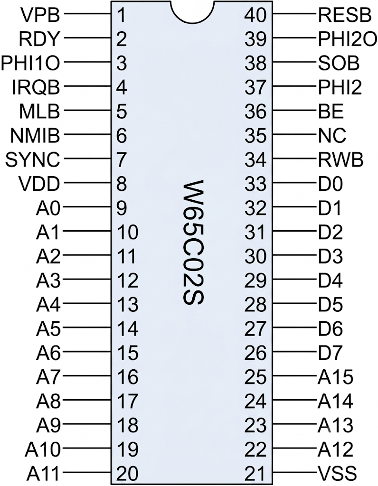
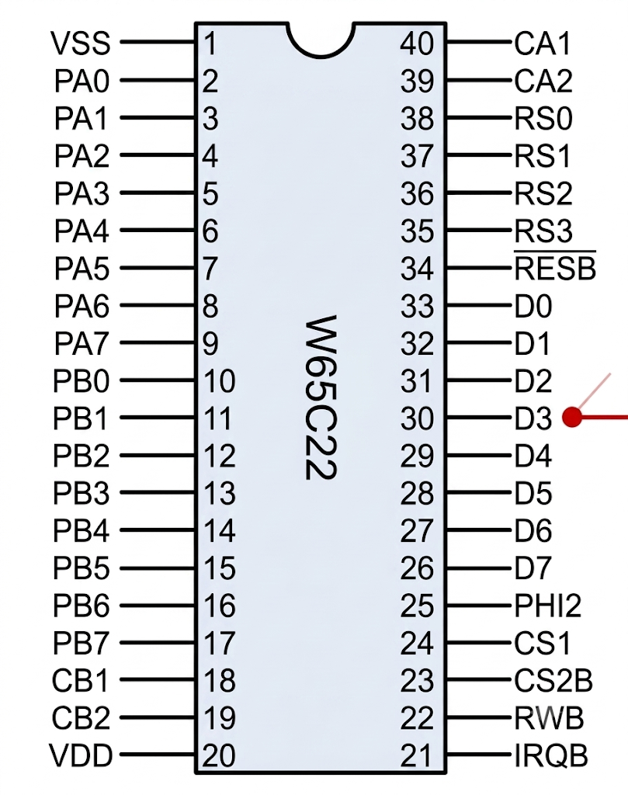
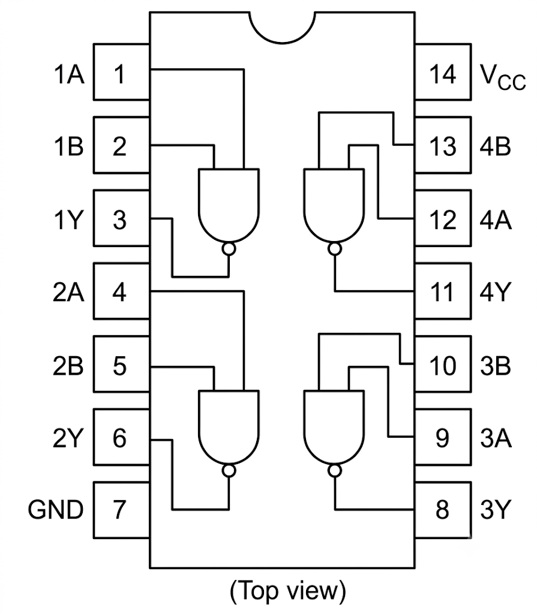

W65C02 8-bitarsdator
Arduino Mega 2560 som minnesemulator och klockgenerator
Detta är en hembyggd 8-bitarsdator där en klassisk W65C02S-mikroprocessor får liv utan att en enda rad maskinkod behöver brännas in i ett EEPROM. Istället agerar en Arduino Mega 2560 som datorns minne och klocka.
Eftersom W65C02S är en CMOS-krets med helt statisk kärna kan klockan stoppas helt utan att processorn glömmer sitt tillstånd. Två fysiska knappar låter dig stega igenom programmet — en klockcykel eller en hel instruktion i taget. En lysdiod pulserar i takt med klockan och en LCD-display visar adress och instruktion i realtid.
Hur fungerar en 6502-processor?
Tänk dig en dirigent som står framför en orkester. Dirigenten har ett partitur — ett program — och taktpinnen är klockan. För varje taktslag händer exakt en sak: dirigenten pekar på nästa not, läser vad som står, och utför den. En 6502-processor fungerar precis likadant, fast med elektriska signaler istället för noter.
Två bussar — adress och data
Processorn har två uppsättningar ledningar ut till världen. Den första är
adressbussen — 16 ledningar som tillsammans bildar ett tal
mellan 0 och 65 535. Det talet är en minnesadress: "jag vill läsa från adress 32 768",
eller i hexadecimalt: $8000. Processorn lägger ut adressen på stiften A0–A15
och alla kretsar på bussen ser den samtidigt.
Den andra uppsättningen är databussen — 8 ledningar. Här kommer svaret tillbaka. När processorn vill läsa från en adress lägger den ut adressen, sätter R/W-signalen till HÖG (Read), och väntar. Den krets som känner igen adressen — i vårt fall Arduino — lägger ut rätt byte på databussen. Processorn läser av den och går vidare till nästa instruktion.
Instruktionscykeln — hämta, avkoda, utför
Varje gång processorn startar en ny instruktion tänder den SYNC-pinnen. Det är processorns sätt att säga "nu börjar jag på något nytt". Sedan följer en förutsägbar dans:
- Hämta opcode: processorn läser byten på den adress som programräknaren (PC) pekar på. SYNC är hög under just denna cykel.
- Avkoda: processorn tittar på opcode-byten och förstår vad som ska göras. Är det
$A9? Då ska nästa byte laddas in i A-registret (LDA #). Är det$8D? Då ska de två nästa byten tolkas som en adress (STA absolute). - Utför: processorn läser eventuella extra bytes (operander), utför operationen, och ökar programräknaren.
- Nästa: PC pekar nu på nästa opcode. Börja om från steg 1.
Minneskartan — processorns värld
6502-processorn ser hela sitt universum som 65 536 adresser — varken mer eller mindre. Varje adress måste ha något som svarar, annars läser processorn in slumpmässiga värden och kraschar. Vår Arduino ser till att varje adress alltid returnerar något.
De gröna områdena är RAM — här kan du lagra variabler och processorn använder automatiskt stacken vid subrutinanrop. Det blå området är ditt program. Det lila längst upp är reset-vektorn: när processorn startar går den först till adress $FFFC, läser två bytes, och hoppar dit. I vårt fall står det $8000 där — processorn hoppar till ditt program.
Det gula är W65C22 VIA — en fysisk I/O-krets som kopplas in i steg 7. När processorn skriver till adresser i detta område är det VIA-kretsen som svarar, inte Arduino. Arduino går ur vägen genom att tri-stata databussen.
Varför Arduino istället för riktiga minneskretsar?
En 6502-dator från 1970-talet hade ROM och RAM som fysiska chips. Varje gång du ville testa ett nytt program fick du bränna ett nytt EPROM under UV-ljus — en process som tog 20 minuter per försök. Arduino vänder på det här: du laddar upp ett nytt program på två sekunder över USB. Arduino läser av processorns adressbuss, slår upp rätt byte i sin interna array, och lägger ut den på databussen — allt inom samma klockcykel.
Detta är inte en emulator i mjukvara — processorn kör på riktigt, med riktiga elektriska signaler. Arduinon är bara minnet. Det betyder att allt du lär dig om 6502:ans instruktionsuppsättning, timing och bussprotokoll gäller på riktigt. Du kan ta bort Arduino och ersätta den med ett EEPROM och ett SRAM-chip — och datorn fungerar precis likadant.
Hur läser Arduino adressbussen så snabbt?
Arduino Mega har 54 digitala I/O-pinnar — nästan tillräckligt för att täcka 16 adresslinjer
+ 8 datalinjer + kontrollsignaler. Men den har också något bättre: portregister.
Istället för att läsa en pinne i taget med digitalRead() (långsamt!) läser vi
hela 8-bitarsportar på en gång:
- PORTF — 8 bitar, läser CPU:ns A0–A7 i en enda maskininstruktion
- PORTK — 8 bitar, läser CPU:ns A8–A15
- PORTA — 8 bitar, driver databussen D0–D7 (eller går tri-state)
Tre registerläsningar, en villkorssats, och vi vet exakt vad processorn vill göra — redo att svara inom samma klockcykel.
Byggsteg
Steg 1 — Ström, klocka, reset: W65C02S får spänning och klockpulser från Arduino D2. En lysdiod blinkar i takt med klockan. Pull-up-motstånd på RDY, IRQB, NMIB, BE, SOB. 100 nF avkoppling vid VDD/VSS.
Steg 2 — Adressbuss A0–A15: Samtliga 16 adresslinjer kopplas till Arduinons analoga portar (PORTF + PORTK). RESB kopplas till D4 för kontrollerad reset. Serieövervakaren visar att CPU:n läser reset-vektorn $FFFC/$FFFD.
Steg 3 — Databuss D0–D7: 8 datalinjer + RWB kopplas in via 100 Ω skyddsmotstånd. Arduinon emulerar minnet. Ett NOP-testprogram laddas på $8000.
Steg 4 — Manuell stegning: Två tryckknappar (D11, D12) för manuell stegning — en klockcykel eller en hel instruktion i taget. SYNC-pinnen (D13) detekterar instruktionsstart.
Steg 5 — LCD-display (parallell 4-bit): LCD 16×2 kopplas direkt till Arduino (D5–D10). Visar adress och data i realtid — ingen datorskärm behövs.
Steg 6 — Eget 6502-program: En räknare i maskinkod: LDX #$00 · INX · STX $0200 · JMP. CPU:n ökar X-registret 0→255 i loop. LCD:n visar exekveringen.
Steg 7 — W65C22 VIA + 74HC00: LCD:n kopplas till VIA:ns I/O-portar. 74HC00 avkodar adress $4000. CPU:n styr LCD:n själv — Arduino är nu bara minne och klocka.
Steg 8 — Assembler-bygge: 6502-programmet skrivs i assembler (ca65) istället för hårdkodade hex-bytes. PlatformIO bygger automatiskt program.asm → program.h vid varje uppladdning.
Steg 9 — Riktigt RAM: 62256 SRAM (32KB) kopplas in på adressbussen. Zero page, stack och data lagras i riktigt RAM-chip — inte i Arduinons arrayer. Arduino går tri-state och låter SRAM hantera $0000–$3FFF.
Komponenter (alla steg)
| Antal | Komponent |
|---|---|
| 1 | W65C02S (DIP-40) |
| 1 | Arduino Mega 2560 |
| 1 | W65C22 VIA (DIP-40) — steg 7–8 |
| 1 | 74HC00 (quad NAND) — steg 7–8 |
| 1 | LCD 16×2 (parallell, t.ex. QC1602A) |
| 1 | 10 kΩ potentiometer (LCD-kontrast) |
| 1 | Lysdiod (klockindikering) |
| 1 | 220 Ω motstånd (klock-LED) |
| 1 | 220 Ω motstånd (LCD-belysning) |
| 4 | 10 kΩ motstånd (pull-up: RDY, IRQB, NMIB, SOB) |
| 8 | 100 Ω motstånd (databuss-skydd) |
| 1 | 100 nF keramisk kondensator (avkoppling CPU) |
| 1 | 10 µF elektrolytisk kondensator (strömstabilisering) |
| 2 | Tryckknappar |
| – | Kopplingsdäck + kopplingstråd |
Pinout-referens
W65C02S

W65C22 VIA

74HC00
